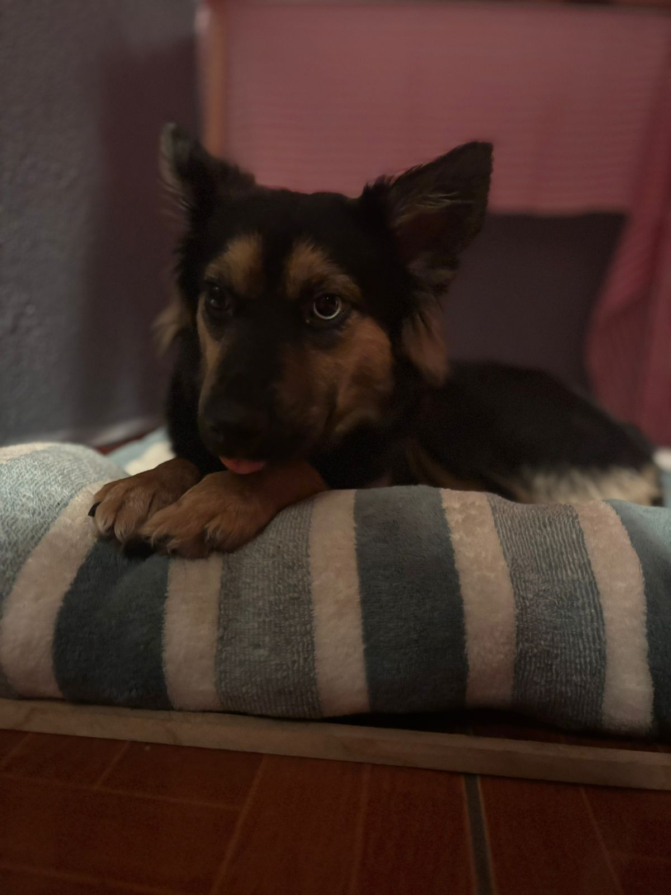

🐶 Animalitos en adoptados 🐱
Conoce algunos de los animalitos que fueron adoptados .

laila 🐶
Edad: 1 año y medio años
muy temerosa de los de mas pero es buena con los niños es supero juguetona ella fue rescatada un 1 de enero del 2026 al llegar ala casa de una famalia por los fuegos piroctecnicos de 31 de dicieembre .

Luna 🐱
Edad: 1 año
Tranquila y cariñosa. ella llego a la vida de las personas responables por que familia antigua ya no podia tener mas perritos en su casa

balu 🐶
Edad: 3 años
muy alegre divertido ,inperactivo el fue rescatado de una secundaria ya que la mama tuvo a los bebes en esa secundaria y el nacio ahi .